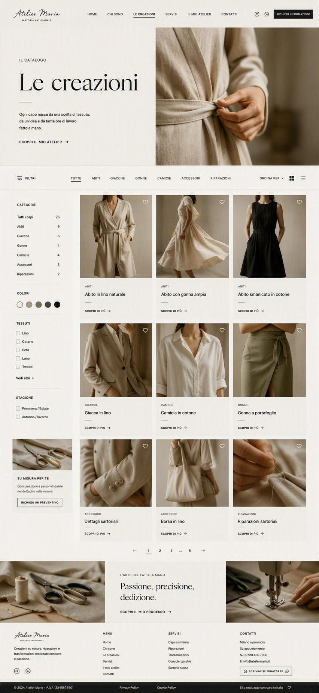
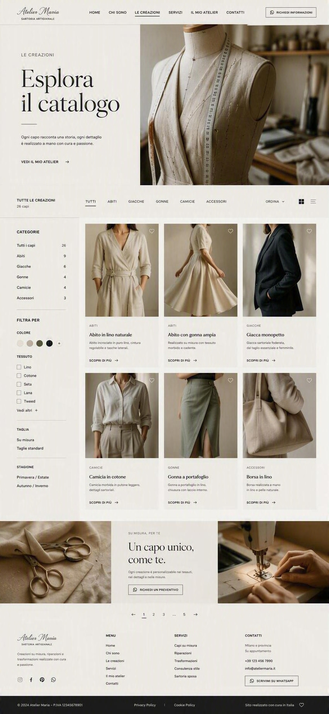

↔ Trascina per ruotare · 01/24
← Torna alle creazioniAbito in
Abiti · Su misura
Abito in
lino naturale
Linea morbida, cintura coordinata e proporzioni definite sulla persona. Qui inserirai il racconto reale del capo.
- Materiale
- Lino
- Colore
- Avorio
- Realizzazione
- Su richiesta

Dettagli che raccontano
Il valore è nelle cose fatte bene.
Sostituisci queste immagini con macro reali di cuciture, bottoni, bordi e tessuti fotografati con luce neutra.
